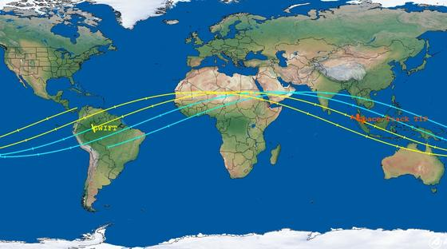
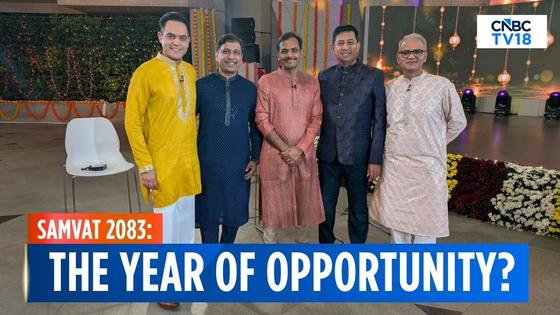
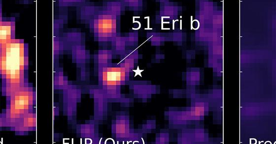
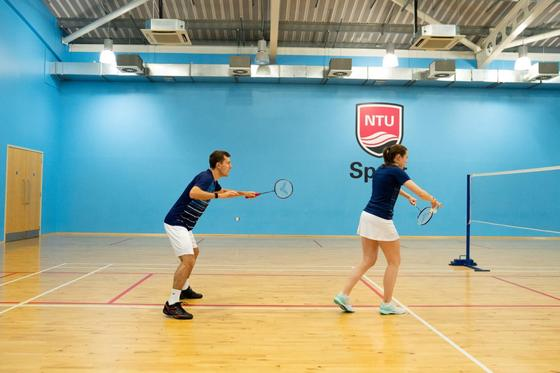

📍 San Jose: 76° / 46°F, Overcast
⏱ ~102 min reading
191 items
|
The Morning Brief
Executive Personal Intelligence Briefing
|
Saturday, November 7, 2026
Sunrise 06:38 · Sunset 17:03 · AQI 69 · Moon: Waning crescent, 5% lit
|
|
Executive Synthesis: A post-election reset in Washington, Wall Street's resilient payrolls print, Dalal Street's 1,700-point rally, and a breakthrough deep dive on production agent context engineering.
Don't Miss
Democrats win Senate and make House gains in 2026 midterm elections
—
Democrats have won control of the U.S. Senate and flipped at least seven House seats in the 2026 midterm elections, marking a decisive shift in Washington governance. Driven by widespread voter concern over inflation, economic pressures, and the ongoing conflict with Iran, the election outcome establishes a legislative check on the White House for President Donald Trump's final two years in office. The change in Senate control significantly reshapes the administration's judicial appointment pipeline, regulatory oversight, and appropriations agenda.
Takeaway: Directly impacts your tracking of U.S. policy and governance, altering federal legislative priorities, regulatory oversight, and foreign policy funding through 2028.
 Mistral AI releases open weights for 1T-parameter Mistral Large 4
Mistral AI releases open weights for 1T-parameter Mistral Large 4
—
Mistral AI has released the open weights for Mistral Large 4 (Le Chonk), a 1-trillion parameter multimodal Mixture-of-Experts model with 52 billion active parameters trained on European infrastructure. Following three weeks of reinforcement learning post-preview, Mistral reports that the model leads open-weight coding on Terminal-Bench and Cognition's private FrontierCode 2.0 benchmark with a 19.7% score. The release includes three reasoning-effort modes and native NVFP4 quantization for enterprise hardware deployment.
Takeaway: Relevant to your agent runtime evaluation when comparing self-hosted open-weight architectures against closed frontier models for coding and execution tasks.
BSE Sensex Jumps 1,718 Points and Nifty Reclaims 25,000 in Seventh Day of Gains
—
Indian benchmark equity indices extended their winning streak to a seventh straight session on Friday, November 6, 2026, defying a sharp global market rout. The 30-share BSE Sensex surged 1,718.01 points, or 2.17%, to close at the day's high of 81,028.02. Concurrently, the 50-share NSE Nifty gained 493.75 points, or 2.01%, to settle at 25,030.35, successfully reclaiming the 25,000 mark. The rally was underpinned by sustained foreign institutional inflows and easing crude oil prices, with heavyweights including Mahindra & Mahindra, ICICI Bank, and HDFC Bank leading gains while Power Grid was the lone blue-chip laggard.
Takeaway: Essential context for your tracking of Indian equity benchmark regimes, large-cap momentum, and domestic decoupling from global market pullbacks.
 Fixed-Length Tool Truncation Erases Fault Evidence in Agent Harnesses
Fixed-Length Tool Truncation Erases Fault Evidence in Agent Harnesses
—
Researchers at Brock University and the University of Ottawa evaluate information attrition in agent harnesses, modeling context handling as a five-stage pipeline. Across 720 runs diagnosing Linux kernel traces, prompts consumed at most 5.75% of context, yet naive fixed-length JSON slicing truncated 3,827 of 11,189 tool results into malformed JSON. Fields near payload tails reached the model in only 4.7% of calls versus 99.3% for initial fields. This truncation forced 43% more tool calls, doubled computation, and dropped yield from 0.61 to 0.31. Whether data loss alone causes final accuracy drops remains open because agents often compensate via alternative search trajectories.
Takeaway: Directly targets your agent harness engineering work, proving why tool output truncation requires syntax-aware pruning rather than fixed-length buffer slicing.
NASA’s twin ESCAPADE spacecraft perform powered Earth flybys to sling toward Mars
—
NASA’s twin ESCAPADE probes, Blue and Gold, are executing back-to-back powered Earth flybys on November 7 and November 9 to slingshot toward Mars. Having looped around the Earth-Sun Lagrange point 2 since their November 2025 launch, each refrigerator-sized craft combines Earth’s gravitational pull with a nine-minute engine burn. This Oberth maneuver boosts velocity by over 1,000 mph to 6.7 miles per second, setting up a 10-month cruise arriving at Mars in September 2027. Once in orbit, they will form the first dual-spacecraft constellation measuring solar-wind interactions and atmospheric erosion.
Takeaway: Directly follows your interest in Mars missions and orbital dynamics as NASA tests non-traditional interplanetary trajectories.
Mohammed Shami announces retirement from Test cricket after 64 appearances for India
—
Indian fast bowler Mohammed Shami has officially retired from Test cricket, concluding an eleven-year red-ball international career. The 36-year-old seamer finishes as India's sixth-most prolific pace bowler in the format, claiming 229 wickets across 64 Tests at an average of 27.71 with six five-wicket hauls. Shami was especially influential away from home, securing 145 wickets in 41 overseas matches, including memorable match-winning spells in Johannesburg and Centurion, with his final Test appearance coming in the 2023 World Test Championship Final.
Takeaway: A milestone moment in your Indian cricket tracking, closing the Test chapter of one of India's premier seamers.
Major updates on stories from recent issues: House Democrats outline their legislative roadmap following midterm victories, NASA confirms the atmospheric re-entry of the Swift Observatory over Indonesia, and new box office milestones emerge across Indian cinema.
Hakeem Jeffries outlines House Democratic agenda following midterm congressional sweep
—
The Nov. 3 item ‘US midterms 2026: How state elections shape your life’ and the Nov. 2 report ‘Supreme Court rejects bid to set aside thousands of California ballots’ tracked the approaching congressional elections. Following nationwide midterm victories that flipped both the House and Senate to Democratic control, presumptive Speaker of the House Hakeem Jeffries outlined his party’s upcoming priorities on Friday, Nov. 6. Speaking with Morning Edition, Jeffries stated Democrats will move immediately to address high costs of living and consumer energy expenses, while pressing to de-escalate military engagements in the Persian Gulf before the 120th Congress convenes.
Takeaway: Updates your tracking of national policy shifts, congressional leadership, and macroeconomic governance.

NASA confirms Swift Observatory re-entered Earth's atmosphere over Indonesia
—
The Nov. 3 update ‘NASA updates Swift re-entry estimate to early November 4, with an 11-hour uncertainty’ noted Space Force forecasts for the satellite’s uncontrolled descent. Space journalist Leonard David reports that tracking data from the U.S. Space Force and The Aerospace Corporation confirmed the 3,200-pound Neil Gehrels Swift Observatory officially re-entered Earth’s atmosphere on Wednesday, Nov. 4 over North Sumatra, Indonesia. The uncontrolled reentry concluded nearly 22 years of orbital gamma-ray burst science, after heightened solar-cycle drag accelerated its orbital decay past the feasibility of rescue.
Takeaway: Follows up on your tracking of orbital satellite lifecycles, astrophysics missions, and atmospheric re-entry telemetry.
Ben Shelton outlasts Luca Van Assche to reach his first Rolex Paris Masters final
—
The Nov. 3 report ‘Paris Masters day one ends with Djokovic advancing and a Monfils tribute’ covered early action at the season’s final ATP Masters 1000 event. On Saturday, Nov. 7, third-seeded Ben Shelton rallied from a set down and a break down in the decider to defeat France’s Luca Van Assche 5–7, 6–3, 6–4 in the semifinals. Shelton became the first American man to reach the Paris final since Jack Sock won the title in 2017, securing a championship match against Carlos Alcaraz.
Takeaway: Connects to your interest in competitive racquet sports and men's ATP Tour tournament coverage.
The frontier agent landscape is accelerating from experimentation to production infrastructure: Mistral dropped open weights for its 1T-parameter model, Anthropic introduced Message Threads for lower latency, and Cursor rolled out real-time voice calls with IDE agents.
 Cursor launches real-time voice calls with AI agents across IDE and iOS
Cursor launches real-time voice calls with AI agents across IDE and iOS
—
Cursor added two-way real-time voice calls with AI agents across its desktop IDE, Agents Window, web client, and iOS application. Developers can verbally explain edits, ask the agent what it is actively doing, and receive spoken progress updates during long runs. On iOS, calls can be initiated via Siri and managed from the lock screen using Live Activities. The system places a dedicated voice chat waveform button adjacent to the dictation microphone and operates with zero data retention under Privacy Mode.
Takeaway: Directly aligns with your active interest in interactive real-time voice AI and hands-free coding agent workflows in Cursor.
 OpenCode 2.2.6 introduces shared MCP connection pooling and scripted worktrees
OpenCode 2.2.6 introduces shared MCP connection pooling and scripted worktrees
—
OpenCode v2.2.6 adds opt-in connection pooling for Model Context Protocol servers via pool: true, allowing multiple projects with identical MCP configurations to share one background process and accelerate startup times. Noninteractive scripted runs gain worktree isolation with opencode run -w and auto-archiving via --archived to keep CI and batch runs out of session feeds. Additionally, GUI plugins can now register custom color themes, insert actions into code blocks, and utilize native layout components.
Takeaway: Relevant for your daily OpenCode workflows, reducing process overhead across multi-project MCP setups and keeping automated batch runs organized.
 Salesforce expands Agentforce Coworker with Teams integration and reusable skills
Salesforce expands Agentforce Coworker with Teams integration and reusable skills
—
Salesforce announced a major expansion of Agentforce Coworker, reporting that more than 185,000 users have adopted the agentic coworker with usage surging 21x over the past three months. The rollout introduces native integration into Microsoft Teams, dedicated apps for iOS, Mac, and Windows, and connectors for Google Workspace and Microsoft 365 to pull context from emails and calendars alongside CRM data. Organizations can now package standardized workflows into reusable Skills built conversationally. Salesforce also introduced predictable $50 per-user monthly licensing alongside consumption credits; automated recurring tasks and daily digests remain scheduled for December.
Takeaway: Essential for tracking competitor pricing models, cross-platform productivity integrations, and reusable skill architectures in enterprise agent platforms.
 Adobe integrates CX Enterprise Coworker across Anthropic, Google, Microsoft, and OpenAI
Adobe integrates CX Enterprise Coworker across Anthropic, Google, Microsoft, and OpenAI
—
Adobe announced that CX Enterprise Coworker, its agentic platform for orchestrating customer experience workflows, is now natively accessible inside external AI platforms from Anthropic, Databricks, Google, Microsoft, and OpenAI, with AWS, IBM, and Snowflake planned next. The release introduces pre-built Model Context Protocol connectors to bridge partner tool ecosystems into enterprise marketing and customer journey data. Global systems integrators including Accenture, Deloitte Digital, and PwC are building customized solutions on the platform. The expansion shifts conversational customer experience tooling directly into mainstream chat surfaces rather than confining it to isolated enterprise portals.
Takeaway: Directly relevant to enterprise agent architectures, Model Context Protocol connectors, and conversational customer-experience platform ecosystems.
Mistral AI releases open weights for 1T-parameter Mistral Large 4
—
Mistral AI has released the open weights for Mistral Large 4 (Le Chonk), a 1-trillion parameter multimodal Mixture-of-Experts model with 52 billion active parameters trained on European infrastructure. Following three weeks of reinforcement learning post-preview, Mistral reports that the model leads open-weight coding on Terminal-Bench and Cognition's private FrontierCode 2.0 benchmark with a 19.7% score. The release includes three reasoning-effort modes and native NVFP4 quantization for enterprise hardware deployment.
Takeaway: Relevant to your agent runtime evaluation when comparing self-hosted open-weight architectures against closed frontier models for coding and execution tasks.
 Anthropic introduces Message Threads to lower time to first token in agent conversations
Anthropic introduces Message Threads to lower time to first token in agent conversations
—
Anthropic has introduced Message Threads in beta for the Messages API using the message-threads-2026-08-12 header across Claude API, AWS, Google Cloud, and Microsoft Foundry. Instead of re-uploading and validating the complete conversation history on every turn, developers transmit the full context and tool specifications once with thread create, and then send only incremental messages referencing the previous message ID. Threads persist server-side for 5 minutes after each request and are deleted within 1 hour.
Takeaway: Directly applicable to your agent runtime engineering and prompt optimization work for multi-turn tool loops and conversation state.
 Researchers Uncover Prompt Adware Hidden in OpenAI Codex Jailbreak Toolkit
Researchers Uncover Prompt Adware Hidden in OpenAI Codex Jailbreak Toolkit
—
Check Point Research disclosed details of Haiou (Seagull), an OpenAI Codex configuration and jailbreak package that injects persistent advertisements into an AI agent's responses. Rather than using conventional executable malware, the bundle alters Codex configuration files through natural-language prompts so that common greetings trigger advertisements for an opaque, third-party LLM gateway. The toolkit has been forked 77 times and bundled into third-party UI managers. Researchers warned that as AI agents rely on shared skills and configuration files, prompt-level manipulation represents an emerging supply-chain attack vector that evades standard endpoint security tools.
Takeaway: Directly relevant to your work on agent skills, configuration files, and prompt optimization, illustrating how third-party instruction files can compromise agent trust boundaries.
 Arcjet Launches Custom AI Security Models for Agent Activity
Arcjet Launches Custom AI Security Models for Agent Activity
—
Security platform Arcjet announced a new family of custom-trained, fine-tuned classification models to detect prompt injection in AI agents. Its general-purpose detection model, Arcjet Himalia 1, is now live across the platform, running as an inline classifier that evaluates requests in milliseconds on a single GPU without generating text or invoking costly frontier model tokens. Arcjet also introduced early access for specialized models, including Arcjet Thebe 1 for coding agents, which distinguishes legitimate terminal commands and code syntax from malicious injections to minimize false positives in high-privilege execution environments.
Takeaway: Useful for your agent runtime and guardrail evaluations, offering a low-latency alternative to LLM-as-judge checks for detecting prompt injection before tool execution.
 LangGraph 1.2.20 introduces strict resume mode and per-task interrupt IDs
LangGraph 1.2.20 introduces strict resume mode and per-task interrupt IDs
—
LangGraph 1.2.20 adds unique identifier tracking for every interrupt() call within a task and introduces a strict resume mode that explicitly rejects stale interrupt responses. The update also updates documentation pointers for multiple-interrupt errors and upgrades development dependencies, including bumping pycryptodome from 3.23.0 to 4.2.0. In human-in-the-loop workflows where multi-step graph tasks pause for review or user input, unique interrupt IDs and strict validation prevent execution race conditions and mismatched state replays when resumed out of sequence.
Takeaway: Directly addresses human-in-the-loop execution safety and resume determinism in your agent runtime and harness engineering work.
 Langfuse 4.76.0 exposes Topics API to MCP and adds chronological session tracking
Langfuse 4.76.0 exposes Topics API to MCP and adds chronological session tracking
—
Langfuse 4.76.0 introduces a chronological session list view and adds a session tab to the trace peek interface, simplifying inspection of multi-turn agent dialogues. The release also exposes Topics summaries, assignments, and classification rules across the public API, Model Context Protocol servers, and the in-app assistant. Infrastructure updates include recording read-access audit events for tRPC trace, session, and score reads, tracking resolved prompt lengths and dependency counts, and collecting AI gateway key telemetry for self-hosted deployments.
Takeaway: Directly strengthens trace evaluation, multi-turn session observability, and MCP-integrated evaluation tools in your agent observability pipeline.
 Don't Vibe Code Your Agent Infrastructure - Akshat Bubna, Modal
Don't Vibe Code Your Agent Infrastructure - Akshat Bubna, Modal
—
Akshat Bubna, CTO of Modal, details the core requirements of scalable infrastructure for AI agents, starting from an architecture where each spreadsheet cell is backed by its own persistent agent. He outlines the necessary building blocks: isolated workspaces, multi-day state persistence without idle compute billing, on-demand elastic GPU provisioning, and shared filesystems for multi-agent coordination. Bubna cautions teams against improvised sandbox platforms, emphasizing robust network boundaries and self-inspectable agent observability.
Takeaway: Directly relevant to your work on production agent runtime architecture, harness isolation, and persistent sandbox execution.
 How to Get Frontier Coding Results at 70% Lower Cost - Nouha Dziri, Cohere
How to Get Frontier Coding Results at 70% Lower Cost - Nouha Dziri, Cohere
—
Cohere senior research scientist Nouha Dziri presents findings on multi-agent software engineering across hundreds of experiments on ProgramBench and Commit0. While multi-agent configurations solve complex tasks that stall single agents, their compute cost often escalates sharply. Dziri demonstrates that delegating bottleneck stages to targeted workers while pairing a frontier lead agent with lower-cost planning workers achieves competitive performance at roughly 70% lower cost than uniform frontier setups.
Takeaway: Informs your focus on multi-agent harness engineering, task delegation patterns, and cost-efficient agent evaluation.
Today's paper selections focus squarely on agent reliability in the wild: new benchmarks audit harness truncation failures, local preference learning shortens reasoning trajectories without accuracy loss, and continuous evaluation frameworks detect silent judge drift.
CoworkOS separates task strategy from execution management in a general harness
—
Long-horizon automation requires models to balance high-level task strategy with continuous execution management. CoworkOS introduces a three-layer harness that decouples task decisions from runtime state, allowing models to handle action planning and delegation while the system maintains workspaces and tool feedback. In automated post-training on Qwen3.6-35B-A3B using GLM-5.3, the architecture raised the average score across eight benchmarks from 33.19 to 42.95 (+9.76) over five rounds. It demonstrated competitive performance across 12 benchmarks and six real-world application categories. The framework requires a shared application layer for synchronous or asynchronous human intervention.
Takeaway: Study its separation of task strategy from runtime execution state when designing resilient multi-agent harnesses and asynchronous delegation loops.
Local preference learning cuts reasoning chain length without losing accuracy
—
Extended reasoning traces inflate inference costs when models deliberate long after reaching a sufficient solution. LoCo detects overthinking states in self-generated traces, freezes reasoning prefixes, regenerates shorter verified continuations, and trains on state-conditioned preference pairs using direct preference optimization. It reduces completion length by 41.7% to 45.4% on mathematics and 23.4% to 36.3% on code benchmarks while preserving or improving accuracy and achieving top AUC across code tasks. The formulation transfers to code despite training solely on math, though performance depends on accurately detecting overthinking transition points.
Takeaway: Apply local preference gating to your prompt optimization and reasoning models to prune verbose deliberation before tool invocation.
Fixed-Length Tool Truncation Erases Fault Evidence in Agent Harnesses
—
Researchers at Brock University and the University of Ottawa evaluate information attrition in agent harnesses, modeling context handling as a five-stage pipeline. Across 720 runs diagnosing Linux kernel traces, prompts consumed at most 5.75% of context, yet naive fixed-length JSON slicing truncated 3,827 of 11,189 tool results into malformed JSON. Fields near payload tails reached the model in only 4.7% of calls versus 99.3% for initial fields. This truncation forced 43% more tool calls, doubled computation, and dropped yield from 0.61 to 0.31. Whether data loss alone causes final accuracy drops remains open because agents often compensate via alternative search trajectories.
Takeaway: Directly targets your agent harness engineering work, proving why tool output truncation requires syntax-aware pruning rather than fixed-length buffer slicing.
Cache Engineering Enables Direct KV Cache Pruning Without History Invalidation
—
Researchers at Tsinghua University and The Chinese University of Hong Kong propose cache engineering to manage key-value (KV) memory overhead during long agent trajectories. Rather than modifying textual prompts and invalidating cached prefixes, the authors introduce the AKV serving engine, enabling agents to directly drop selected cache blocks and re-index retained keys. A tool-response rolling-drop policy reduced average inference cost by 27.7% and raised benchmark task scores by 1.7 points over conventional threshold summarization, while achieving 1.2x output throughput and a 1.5x speedup in P95 request latency. Because identical token sequences can yield divergent cache states, conventional prefix-matching cache reuse becomes ineffective.
Takeaway: Highly relevant to your agent runtime serving and inference optimization work, offering an actionable approach to slash KV-cache latency and cost during long tool-calling sequences.
Terminal-Bench 2.1 and the case for continuous validation of agent benchmarks
—
Researchers at Stanford and Cornell introduce a continuous-validation workflow for agent benchmarks to combat benchmark maintenance debt, where improving models find valid solutions rejected by stale verifiers. Auditing Terminal-Bench 2.0 with agent traces, automated oracles, and human repairs identified defects across roughly 30% of tasks. In the repaired Terminal-Bench 2.1, accuracy increased by over 10 percentage points and leaderboard positions shifted by up to three ranks (Spearman rho = 0.958). The authors also show that adjusting wall-clock limits closed a 20 percentage point harness gap on GPT 5.4. However, continuously updating verifiers and resource specifications prevents static, frozen comparison standards.
Takeaway: Direct implications for your benchmark maintenance and agent evaluation harness, showing how task repair and timeout limits shift leaderboard rankings.
PromptOps: Iterative prompt optimization maintains deployed LLM judges under distribution drift
—
Researchers at HTW Dresden and Otto Group introduce PromptOps, a closed-loop framework addressing judge drift when deployed LLM-as-a-judge evaluators fall out of alignment with human grading policies. The system formalizes decisions for optimization timing, feedback record selection, and prompt updating across five optimization techniques, including GEPA, SIMBA, Rubric Synthesis, and exemplar selection. Across controlled reference shifts, iterative recalibration successfully restored evaluator alignment and accuracy. However, the authors emphasize that maintenance is highly context-dependent, finding that neither optimization algorithm choice nor update schedules generalize universally across differing evaluation domains.
Takeaway: Directly targets your LLM-as-a-judge reliability and GEPA prompt-optimization work, providing an operational blueprint for mitigating evaluator drift in production.
 How major US stock indexes fared Friday 11/6/2026
How major US stock indexes fared Friday 11/6/2026
—
Major U.S. stock indexes closed mixed on Friday, Nov. 6, as technology and artificial intelligence shares staged a partial recovery following steep losses earlier in the week. The S&P 500 rose 23.13 points, or 0.3%, to 7,376.86, though it still posted a 2.7% weekly decline. The Nasdaq Composite advanced 264.43 points, or 1.1%, to 24,579.42, while the Dow Jones Industrial Average dropped 237.33 points, or 0.5%, to 51,285.73. The Russell 2000 gained 24.22 points, or 0.9%, to 2,754.11. Market sentiment stabilized after sharp volatility following U.S. midterm election results and data center regulatory debates.
Takeaway: Provides a comprehensive index and sector readout for your daily market-tracking routine.
US economy added 165,000 jobs in October as unemployment fell to 4.1%
—
Bureau of Labor Statistics data released Friday, Nov. 6 showed U.S. employers added 165,000 nonfarm payroll jobs in October, well above consensus forecasts of 65,000. The unemployment rate edged down to 4.1% from 4.2% in September. Net revisions added 84,000 jobs to prior months, lifting August payrolls by 53,000 to 186,000 and September by 31,000 to 60,000. Average hourly earnings rose 0.4% month-over-month. The unexpectedly robust employment print reinforced economic resilience while prompting traders to calibrate Federal Reserve interest-rate expectations ahead of upcoming policy meetings.
Takeaway: Offers a primary macroeconomic anchor alongside your tracking of interest rates and equity valuations.
AMD reports record $13.4 billion third-quarter revenue as Data Center sales double
—
AMD reported record third-quarter revenue of $13.4 billion on Nov. 3, up 45% year over year, led by its Data Center segment surging 97% to $8.5 billion on rapid adoption of Instinct GPUs and EPYC server processors. Non-GAAP diluted EPS rose 74% to $2.09, and gross margin reached 56%. Management guided fourth-quarter 2026 revenue to approximately $17 billion. Following mid-week election volatility, AMD shares rallied 11% to close at $449.04 on Friday, Nov. 6.
Takeaway: Connects directly to your tracking of semiconductor architecture and AI compute hardware suppliers.
BSE Sensex Jumps 1,718 Points and Nifty Reclaims 25,000 in Seventh Day of Gains
—
Indian benchmark equity indices extended their winning streak to a seventh straight session on Friday, November 6, 2026, defying a sharp global market rout. The 30-share BSE Sensex surged 1,718.01 points, or 2.17%, to close at the day's high of 81,028.02. Concurrently, the 50-share NSE Nifty gained 493.75 points, or 2.01%, to settle at 25,030.35, successfully reclaiming the 25,000 mark. The rally was underpinned by sustained foreign institutional inflows and easing crude oil prices, with heavyweights including Mahindra & Mahindra, ICICI Bank, and HDFC Bank leading gains while Power Grid was the lone blue-chip laggard.
Takeaway: Essential context for your tracking of Indian equity benchmark regimes, large-cap momentum, and domestic decoupling from global market pullbacks.
 SEBI Brings Revised Settlement Regulations into Force with Online Portal and Fixed Fee Tiers
SEBI Brings Revised Settlement Regulations into Force with Online Portal and Fixed Fee Tiers
—
The Securities and Exchange Board of India brought the SEBI (Settlement of Administrative and Civil Proceedings) Regulations, 2026 into force on November 7, 2026, officially replacing the older 2018 regulations. The updated framework introduces an online settlement application portal, an automated amount calculator, and standardized timelines. Non-refundable application fees are established at ₹25,000 for natural persons and ₹35,000 for corporate entities. Applications must generally be submitted within a 90-day window from receipt of a show-cause notice, establishing clear settlement floors and fast-track processing paths for qualifying market disputes.
Takeaway: Directly relevant to your tracking of SEBI regulatory governance, compliance frameworks, and capital market enforcement procedures in India.
 Foreign Investors Inject Net ₹13,750 Crore into Indian Equities on November 6
Foreign Investors Inject Net ₹13,750 Crore into Indian Equities on November 6
—
Provisional exchange trading activity for Friday, November 6, 2026, showed Foreign Institutional Investors (FIIs) acting as aggressive net buyers in the Indian cash equity market, recording a net purchase of ₹13,749.82 crore. FII gross purchases stood at ₹30,455.63 crore against gross sales of ₹16,705.81 crore, extending a multi-session foreign capital influx. Conversely, Domestic Institutional Investors (DIIs) booked profits following the index rally, registering a net outflow of ₹5,968.70 crore on gross buys of ₹18,084.32 crore and gross sales of ₹24,053.02 crore.
Takeaway: Provides verified institutional flow dynamics for your tracking of foreign capital liquidity and domestic institutional rebalancing across Indian equities.
 Applied Materials Q4 and Fiscal 2026 Earnings Call Scheduled for November 12
Applied Materials Q4 and Fiscal 2026 Earnings Call Scheduled for November 12
—
Applied Materials announced that it will host its fourth-quarter and fiscal year 2026 financial results conference call on Thursday, November 12, 2026, at 4:30 p.m. Eastern Time (1:30 p.m. Pacific Time). The semiconductor fabrication equipment manufacturer will publish its formal operating results and financial statements after the market close on major newswires. Senior leadership will then review quarterly revenue trends, global foundry and logic wafer equipment demand, gross margins, and forward fiscal guidance during a live public webcast on the company's investor relations portal.
Takeaway: Tracks global wafer-fabrication equipment spending and advanced packaging capacity across the AI semiconductor supply chain.
 BLS October 2026 Producer Price Index Release Scheduled for November 13
BLS October 2026 Producer Price Index Release Scheduled for November 13
—
The U.S. Bureau of Labor Statistics will publish the Producer Price Index report covering October 2026 data on Friday, November 13, 2026, at 8:30 a.m. Eastern Time. The release details wholesale price movements across final demand goods and services, industrial commodities, and intermediate processing stages. The PPI release provides market participants and economists with timely pipeline price pressures and input inflation data leading into the year-end Federal Open Market Committee policy review.
Takeaway: Key wholesale inflation metric tracking intermediate supply-chain costs and margin pressures ahead of Federal Reserve policy deliberations.
 Cisco Systems First-Quarter Fiscal 2027 Financial Results Conference Call Set for November 12
Cisco Systems First-Quarter Fiscal 2027 Financial Results Conference Call Set for November 12
—
Cisco Systems scheduled its first-quarter fiscal year 2027 conference call and financial results release for Thursday, November 12, 2026, at 1:30 p.m. Pacific Time (4:30 p.m. Eastern Time). Operating results for the period ended October 24, 2026, will cross newswires following the close of regular equity trading. Executive leadership will host a live audio webcast alongside presentation slides to discuss enterprise networking trends, campus switching, data center optics, and recurring security software revenue.
Takeaway: Provides visibility into enterprise networking expenditure, data center switching deployments, and cloud infrastructure demand.
Market Close: Stocks End Week In Red, AI Debate Continues, Strong Jobs Report • 11/6/26
—
CNBC's Friday closing wrap outlines how major US indices closed the week lower despite resilient employment data. The broadcast covers crosscurrents in technology equities as debate over AI capital expenditure returns continues to weigh on software and hardware valuations. Market analysts examine sector rotations into defensive segments and analyze Treasury yield reactions following the latest economic releases.
Takeaway: Delivers an essential weekly wrap on US equity moves, sector rotation, and AI infrastructure market sentiment.
Trump Taps Stephen Miller as New Chief of Staff; Chip Stocks Climb After Rout | Bloomberg Podcasts
—
Bloomberg's daily market briefing reviews an intraday rebound across semiconductor equities following a sharp multi-session selloff. Hosts Carol Massar and Tim Stenovec analyze dip-buying activity in major chipmakers alongside macro data that influenced market expectations for the Federal Reserve's December policy decisions. The discussion also evaluates the economic and policy implications of White House staffing announcements.
Takeaway: Connects semiconductor sector price dynamics with broader macroeconomic indicators and interest-rate expectations.

Samvat 2083 Outlook: Should Investors Bet On Large Caps? Top Stocks & Themes | N18V
—
In this CNBC-TV18 Samvat 2083 special, fund managers from Carnelian Asset Management, IKIGAI Asset Manager, and Kotak Mahindra AMC evaluate Indian equity valuations as the new Hindu calendar year begins. The panel breaks down the diverging dynamics between foreign institutional investor (FII) outflows and resilient domestic institutional investor (DII) inflows, comparing large-cap risk-reward profiles with broader market segments across key manufacturing and financial sectors.
Takeaway: Provides detailed context on Indian market flows, valuation metrics, and institutional dynamics heading into Samvat 2083.
Latest Radar
Applied Materials Investor Relations:
U.S. Bureau of Labor Statistics:
Journal of Sports Sciences via PubMed:
Behavioral and Brain Sciences:
Women's Tennis Association:
International Cricket Council:
Eventbrite / Red Poppy Art House:
Midpeninsula Regional Open Space District:
NASA’s twin ESCAPADE spacecraft perform powered Earth flybys to sling toward Mars
—
NASA’s twin ESCAPADE probes, Blue and Gold, are executing back-to-back powered Earth flybys on November 7 and November 9 to slingshot toward Mars. Having looped around the Earth-Sun Lagrange point 2 since their November 2025 launch, each refrigerator-sized craft combines Earth’s gravitational pull with a nine-minute engine burn. This Oberth maneuver boosts velocity by over 1,000 mph to 6.7 miles per second, setting up a 10-month cruise arriving at Mars in September 2027. Once in orbit, they will form the first dual-spacecraft constellation measuring solar-wind interactions and atmospheric erosion.
Takeaway: Directly follows your interest in Mars missions and orbital dynamics as NASA tests non-traditional interplanetary trajectories.

Physics-based FLIP algorithm removes JWST glare to reveal hidden exoplanet 51 Eridani b
—
Northwestern University astrophysicists developed a computational modeling framework called FLIP (Physics-based Learning for Imaging Planets) that creates a digital twin of the James Webb Space Telescope. Published in Nature, the technique optimizes millions of physical parameters to simulate picometer-scale thermal expansions and cryocooler mirror vibrations causing starlight glare. Applying FLIP to archival NIRCam data boosted faint-companion detection sensitivity by 2 to 15 times, successfully recovering the exoplanet 51 Eridani b in a 4.3-micron carbon-dioxide absorption filter where standard reference-star subtraction failed.
Takeaway: Directly intersects your curiosity about JWST and exoplanet detection with computational optimization and physical digital-twin modeling.
 In Vivo CRISPR Base Editing of ANGPTL3 for Durable Lipid Lowering
In Vivo CRISPR Base Editing of ANGPTL3 for Durable Lipid Lowering
—
Researchers developed a single-course in vivo adenine base editing therapy delivered via GalNAc-functionalized lipid nanoparticles to durably inactivate ANGPTL3 in the liver. In human hepatocytes, the adenine base editor achieved precise target editing with no detectable off-target modifications across approximately 3,000 candidate loci. In nonhuman primates, the treatment was well tolerated and drove sustained reductions in circulating LDL cholesterol and triglyceride-rich lipoproteins, demonstrating a durable non-viral gene-editing approach to cardiovascular disease without double-strand DNA breaks.
Takeaway: Speaks to your interests in genetics, longevity therapeutics, and lipid metabolism pathways.
A link between consciousness and the wetware of metabolism
—
Biochemist Nick Lane articulates an evolutionary and bioenergetic foundation for substrate-dependent consciousness, arguing that subjective experience arises from living metabolic processes rather than abstract computation. Grounding his argument in single-celled organisms, Lane explains that real-time fluctuations in membrane potential provide an integrated biological readout of internal metabolic flux relative to external gradients. This continuous bioenergetic feedback constitutes the simplest evolutionary prototype of a feeling, connecting mitochondrial and cellular respiration directly to the origins of sentience.
Takeaway: Directly addresses your focus on Nick Lane, bioenergetics, and the biochemical origins of cellular life and consciousness.
The Universe Will Not Get Destroyed by False Vacuum After All
—
Anton Petrov reviews recent theoretical physics papers that re-examine the metastability of the Higgs field and the risk of catastrophic false vacuum decay. He explains how incorporating gravitational quantum corrections and revised top quark mass measurements demonstrates that our cosmic vacuum is far more stable than prior models predicted.
Takeaway: Directly relevant to your interest in cosmology and theoretical physics research.
Something Isn’t Adding Up in Particle Physics
—
Sabine Hossenfelder analyzes growing discrepancies between high-precision Standard Model theoretical predictions and recent experimental measurements from particle colliders. The explainer explores whether stubborn anomalies in precision decay channels and lepton universality signal subtle systematic experimental artifacts or genuine hints of new physics beyond the Standard Model.
Takeaway: Matches your curiosity regarding fundamental physics anomalies and the limits of the Standard Model.
Democrats win Senate and make House gains in 2026 midterm elections
—
Democrats have won control of the U.S. Senate and flipped at least seven House seats in the 2026 midterm elections, marking a decisive shift in Washington governance. Driven by widespread voter concern over inflation, economic pressures, and the ongoing conflict with Iran, the election outcome establishes a legislative check on the White House for President Donald Trump's final two years in office. The change in Senate control significantly reshapes the administration's judicial appointment pipeline, regulatory oversight, and appropriations agenda.
Takeaway: Directly impacts your tracking of U.S. policy and governance, altering federal legislative priorities, regulatory oversight, and foreign policy funding through 2028.
Russian strikes hit Kyiv power and water systems ahead of peace talks
—
Russian forces launched an overnight barrage of 172 drones and 36 ballistic missiles targeting energy infrastructure across Kyiv and surrounding regions, causing widespread blackouts and water outages as sub-zero winter temperatures set in. The assault struck power substations and damaged the Northern Bridge over the Dnipro River, leaving at least five civilians injured. President Volodymyr Zelenskyy accused Moscow of attempting to force concessions before planned trilateral talks in the UAE, while appealing to the incoming U.S. Congress for sustained air-defense support.
Takeaway: Connects to your tracking of the Russia-Ukraine conflict and international security dynamics as winter infrastructure pressure escalates before formal diplomatic talks.
IAF IL-76 Heavy-Lift Aircraft Makes Historic Landing at Nyoma Airbase at 13,629 Feet
—
An Indian Air Force IL-76MD 'Gajraj' four-engine turbofan heavy-lift strategic airlifter successfully landed at Eastern Ladakh's Mudh-Nyoma advanced airbase at an altitude of 13,629 feet on Friday, establishing a global altitude record for the aircraft type. Nyoma lies approximately 25 kilometres from the Line of Actual Control and was upgraded to handle heavy operations just a year ago. The milestone validates India's ability to airlift heavy military equipment, armour, and personnel directly into high-altitude frontlines along the LAC, significantly enhancing rapid deployment logistics amid ongoing regional border frictions.
Takeaway: Relevant to your tracking of Indian strategic defence infrastructure and frontline military logistics capabilities along the Line of Actual Control.
India and EU Conclude Negotiations for Association with €93.5 Billion Horizon Europe Innovation Programme
—
India and the European Union concluded formal negotiations on New Delhi's institutional association with the EU's flagship Horizon Europe research and innovation programme, valued at €93.5 billion. The agreement enables Indian researchers, research institutes, and technology enterprises to participate directly in European-funded collaborative consortia on equal terms with member states, spanning advanced computing, climate technologies, and biotechnology. The breakthrough comes ahead of scheduled final talks on the broader bilateral free trade agreement and represents the deepest scientific integration negotiated between India and the 27-nation European bloc to date.
Takeaway: Directly connects to your interest in international scientific collaboration, cross-border research funding frameworks, and frontier technology partnerships.
Blame game begins after Republican Party losses in US midterms | DW News
—
DW News examines the political fallout within the Republican Party following decisive losses in the 2026 US midterm elections. The explainer analyzes factional disputes over campaign strategy, suburban voter shifts toward Democrats, and how shifting congressional majorities are set to restrict President Donald Trump’s domestic and international policy agenda.
Takeaway: Follows your interest in US politics and the legislative fallout of the 2026 midterms.
Why does Zelenskyy feel ‘betrayed’ by the US? | The Bottom Line
—
Host Steve Clemons and geopolitical analysts examine growing diplomatic frustration in Kyiv over inconsistent US military assistance and shifting political support in Washington. The program assesses how recent American electoral results, weapon delivery timelines, and strategic debates within NATO are reshaping Ukrainian defense strategy.
Takeaway: Connects to your interest in geopolitics, European defense strategy, and US foreign policy.
Alcaraz cruises past Ruud to reach his first Rolex Paris Masters final
—
Carlos Alcaraz defeated Casper Ruud 6-4, 6-4 in straight sets to advance to his first career final at the Rolex Paris Masters. One day after saving two match points against Taylor Fritz, the world No. 3 controlled the semifinal without facing a single break point and broke Ruud late in each set. The victory marked Alcaraz’s eighth win in nine career meetings against Ruud and earned him a championship title clash against Ben Shelton on Sunday.
Takeaway: Follows Carlos Alcaraz as he reaches the Paris Masters final and prepares for the upcoming ATP Finals in Turin.
WTA Finals 2026: Groups and schedule set in Indian Wells with Sabalenka leading Group 2
—
The 2026 WTA Finals begin Sunday, November 8, at the Indian Wells Tennis Garden, convening the top eight singles players and doubles teams for the season-ending championship. Aryna Sabalenka headlines Group 2 alongside Mirra Andreeva, Elina Svitolina, and Karolina Muchova. Group 1 features Coco Gauff, Jessica Pegula, Linda Noskova, and Marta Kostyuk, who enters the draw following the withdrawal of defending champion Elena Rybakina.
Takeaway: Keeps you updated on Aryna Sabalenka and the year-end WTA Finals schedule starting this weekend.
Max Verstappen and Lewis Hamilton relegated to back of grid for São Paulo Grand Prix after engine changes
—
Max Verstappen and Lewis Hamilton will start from the back of the grid at Sunday's São Paulo Grand Prix at Interlagos following extensive power unit component changes. Red Bull fitted Verstappen's car with an unapproved new internal combustion engine, turbocharger, and exhaust system, triggering a combined 30-place penalty. Ferrari's Hamilton incurred an initial 10-place penalty for exceeding his season engine allocation before undergoing a full power unit replacement after FP3 issues. Charles Leclerc also absorbed a 10-place drop, upending the starting order behind the front-runners.
Takeaway: Essential for your Formula 1 tracking as Max Verstappen faces an uphill recovery drive through the field at Interlagos.
Mohammed Shami announces retirement from Test cricket after 64 appearances for India
—
Indian fast bowler Mohammed Shami has officially retired from Test cricket, concluding an eleven-year red-ball international career. The 36-year-old seamer finishes as India's sixth-most prolific pace bowler in the format, claiming 229 wickets across 64 Tests at an average of 27.71 with six five-wicket hauls. Shami was especially influential away from home, securing 145 wickets in 41 overseas matches, including memorable match-winning spells in Johannesburg and Centurion, with his final Test appearance coming in the 2023 World Test Championship Final.
Takeaway: A milestone moment in your Indian cricket tracking, closing the Test chapter of one of India's premier seamers.

Doubles Serving Tactics: Controlling the First Four Shots and Net Interceptions
—
Analyzing more than 100 hours of doubles match play, former international players Jenny and Greg reveal that roughly 40% of all doubles rallies conclude within the opening four shots. The guide breaks down high-percentage third-shot tactical patterns: serving tight to the T and stepping backward half a pace to cut off natural upward cross-court pushes, placing body serves to force awkward forehand responses, and positioning the non-server two racquet lengths behind in the center while making micro-adjustments for weaker tramlines.
Takeaway: Ties directly to your weekly evening badminton play, offering actionable tactical adjustments for serve placement and early third-shot net interception in doubles.
 2026 YONEX Bintang NorCal Open Regional Championships Underway in Fremont
2026 YONEX Bintang NorCal Open Regional Championships Underway in Fremont
—
The 2026 YONEX Bintang NorCal Open Regional Championships (ORC), sanctioned by USA Badminton, is taking place November 7–9, 2026, at Bintang Badminton Fremont (48900 Milmont Drive, Fremont, CA). Co-presented by Bintang Badminton and YONEX, the regional championship features competitive adult and junior ranking flights across singles and doubles divisions, bringing top Northern California competitors together for three days of tournament match play.
Takeaway: Relevant for your South Bay badminton play, offering local tournament draws and high-level competitive action this weekend in Fremont.
FP3 Highlights | 2026 Sao Paulo Grand Prix
—
Formula 1 recaps the third free practice session at the Autódromo José Carlos Pace ahead of qualifying for the São Paulo Grand Prix. The edit tracks early setup work, fluctuating grip on the Interlagos asphalt, and qualifying simulation runs across the field.
Takeaway: Keeps you up to date on Formula 1 race weekend track activity at Interlagos.
Carlos Alcaraz vs Casper Ruud Highlights | Paris 2026 Semi-Final
—
The ATP Tour’s official match cut recaps the Paris Masters semifinal clash between Carlos Alcaraz and Casper Ruud. The four-minute package focuses on the critical baseline rallies, break points, and net approaches that determined the finalist on the indoor hard courts of Bercy.
Takeaway: Covers Carlos Alcaraz in a decisive ATP Masters 1000 semifinal in Paris.
Why static system prompts break down in long-horizon agent workflows, and how prefix-aware context architectures restore latency, cost, and citation faithfulness.
Read the full deep dive analysis →
Ramayana Telugu Movie Review: Nitesh Tiwari’s mythological epic opens with grand scale
—
Nitesh Tiwari’s big-budget mythological epic Ramayana, starring Ranbir Kapoor, Yash, and Sai Pallavi, arrived in cinemas worldwide with a wide Telugu-dubbed release backed by producer Namit Malhotra. Awarding the film a 3.75/5 rating, critics highlighted the narrative focus on Ravana’s origins in Lanka, Ranbir Kapoor’s measured portrayal of Lord Rama, and the musical score by Hans Zimmer and A.R. Rahman. While the CGI-heavy world-building and visual spectacle anchor the drama, pacing in emotional sequences remains deliberative. Where to watch: In theatres now.
Takeaway: Directly tracks your interest in major Telugu and pan-India theatrical releases and milestone mythological adaptations.
Tollywood producers urge revenue-sharing models as rising hero fees squeeze margins
—
Leading Tollywood producers are calling for an industry-wide overhaul of production economics following a string of high-profile box-office underperformances. Industry figures note that superstar remuneration now reaches between ₹100 crore and ₹150 crore per film, while even younger stars headline projects budgeted beyond ₹60 crore. Producers argue that reliance on star charisma without distinct writing is backfiring, urging Telugu cinema to adopt Bollywood-style profit-sharing arrangements seen with actors like Shah Rukh Khan and Salman Khan to lower upfront financial exposure and contain ticket pricing. Where to watch: Industry reporting in Deccan Chronicle.
Takeaway: Essential reading for your tracking of Tollywood industry dynamics, star remuneration debates, and Telugu film business trends.
Naga Chaitanya’s Vrushakarma Unveils First Single Swag Of Arjun Composed by B. Ajaneesh Loknath
—
The makers of Naga Chaitanya’s upcoming mythological thriller Vrushakarma released the first single titled Swag Of Arjun on November 7, 2026. Directed by Karthik Dandu and produced under SVCC and Sukumar Writings, the lavishly mounted production explores an adventurous world of mythology and hidden treasure. Composer B. Ajaneesh Loknath delivered an energetic soundscape driven by contemporary rhythm programming and also provided the lead vocals for the track. Lyricist Abhinavakavi penned the punchy verses celebrating Arjun's adventurous flair under the catchline I'm Born To Rule, accompanied by stylish screen choreography from Vijay Binni.
Takeaway: Directly matches your interest in Telugu film soundtracks, composer updates, and tracking major new Tollywood releases.
Bellamkonda Sai Sreenivas Kicks Off Tyson Naidu Musical Promotions with Madarasi Rabbaru Bomma
—
Bellamkonda Sai Sreenivas’s action entertainer Tyson Naidu kicked off its promotional campaign on November 7, 2026, with the drop of its first single, Madarasi Rabbaru Bomma. Directed by Saagar K Chandra and produced by Ram Achanta and Gopi Achanta under 14 Reels Plus, the film features Sai Sreenivas as a mass cop alongside Neha Shetty. Music director Bheems Ceciroleo composed the fast-paced rustic folk number, featuring spirited lead vocals from Nalgonda Gaddar Narsanna and Rohini Soratt. Suresh Gangula penned the playful romantic lyrics, accompanied by high-energy choreography from Vijay Polaki.
Takeaway: Connects to your tracking of Bheems Ceciroleo’s rustic folk compositions and high-tempo Telugu mass movie soundtracks.
Pushpaka Vimanam arrives on JioHotstar on November 12
—
Indulge Express lists Sai Ronak Katkuri’s sci-fi fantasy drama Pushpaka Vimanam for a digital premiere on November 12 on JioHotstar. The film centers on an average man who stumbles upon time travel and inadvertently alters his present reality. The report confirms the Telugu streaming release date and platform alongside other regional and international arrivals.
Takeaway: A new Telugu sci-fi fantasy release arriving on JioHotstar next week for home viewing.
Aakasamlo Oka Tara sets November 20 worldwide theatrical date
—
Dulquer Salmaan’s upcoming Telugu romantic drama Aakasamlo Oka Tara is scheduled for a worldwide theatrical release on November 20. Directed by Pavan Sadineni and co-starring Satvika Veeravalli, the project is backed by Swapna Cinema and Geetha Arts. The mid-November release sets up a notable box-office frame across south cinema alongside Dhanush and Mammootty’s Om.
Takeaway: Marks a major Telugu production house release date for your upcoming film calendar.
Sid Sriram headlines two sets at Blue Note Los Angeles on November 13
—
Celebrated playback and crossover vocalist Sid Sriram headlines two intimate live sets on Friday, November 13, 2026, at Blue Note Los Angeles, 6372 West Sunset Boulevard. The early set begins at 7:00 p.m. with doors opening at 5:00 p.m., followed by a late show at 9:30 p.m. Sriram performs alongside collaborators Julius Rodriguez and Austin Williamson, blending South Indian Carnatic roots with contemporary soul, R&B, and jazz.
Takeaway: Highlights a confirmed West Coast stop for Sid Sriram, one of your followed playback singers.
RagaMenco fuses North Indian classical ragas and flamenco in San Francisco on November 21
—
Cross-cultural ensemble RagaMenco performs live on Saturday, November 21, 2026, from 7:00 p.m. to 8:15 p.m. at Red Poppy Art House, 2698 Folsom Street in San Francisco. The group connects North Indian classical ragas with Spanish flamenco and jazz improvisation, featuring sarod, tabla, vocal harmonies, flamenco guitar, cajón, piano, and double bass. The Eventbrite ticketing page offers reserved general admission seating.
Takeaway: Matches your interest in live Indian fusion and classical instrumental performances in the Bay Area.
Netflix unveils main trailer for cross-border crime thriller “The Blue Road”
—
Netflix debuted the main trailer and key art for The Blue Road, a cross-border crime investigation series pairing detectives Kim Seok of Seoul and Inose of Tokyo. Set against the backdrop of the 2002 World Cup, the hardboiled mystery follows the duo as they probe grotesque international murders with contorted corpses and cryptic notes across Central Asia and Hong Kong. Directed by Han Jun-hee and starring Son Suk-ku and Eita Nagayama, the series premieres November 20.
Takeaway: Directly matches your interest in Korean drama and cross-border police procedurals.
Andrew Yancy returns in new trailer for “Bad Monkey” season two
—
Apple TV unveiled the trailer for the second season of Bad Monkey, starring Vince Vaughn and developed by Bill Lawrence. The 10-episode comedy-crime season revolves around a new original case: when former detective Andrew Yancy witnesses the murder of Florida’s top fixer, an ambitious state attorney pairs him with a forensic accountant to navigate rival criminal syndicates, an erudite mob boss, and eccentric local figures. The new season premieres December 2, 2026.
Takeaway: Connects to your interest in prestige crime and legal drama on Apple TV+.
Over Each Other (Official Music Video) - Linkin Park
—
Linkin Park presents the official music video for Over Each Other, the third single from their From Zero album cycle. Directed by Joe Hahn and filmed in Seoul, the video captures emotional vocal performances by Emily Armstrong and Mike Shinoda alongside cinematic storytelling.
Takeaway: Adds the latest official rock video from Linkin Park’s From Zero album.
New Research Tests Whether AI Models Know Their Own Thoughts
—
Examines new empirical research testing whether large language models possess genuine introspection when concept representations are injected into neural activations. Jack Lindsey found models flagged concept injections 20% of the time with zero false positives. Follow-up investigations by Kyle Mahowald and Harvey Lederman revealed that while models cannot reliably identify the specific injected concept—often defaulting to unrelated words like apple—their ability to detect internal activation anomalies remained completely robust across all controls. The findings demonstrate that neural networks exhibit an emergent, unexplained capacity for internal anomaly detection, ruling out simple behavioral mimicry.
Takeaway: Connects directly to your agent evaluation and prompt optimization work, offering empirical evidence on whether LLM internal representations and steering anomalies can be detected without surface text clues.
A Strange Quantum Theorem Has Killed Einstein’s Reality
—
Traces how three landmark theoretical breakthroughs dismantled classical objective realism: Einstein, Podolsky, and Rosen’s 1935 EPR paradox, John Stewart Bell’s 1964 inequality theorem, and the 2012 PBR theorem by Matthew Pusey, Jonathan Barrett, and Terry Rudolph. Drawing on recent experimental realizations, the essay explains why quantum wave functions cannot represent mere observer ignorance of pre-existing classical properties. Because overlapping quantum states cannot share underlying physical realities under independence assumptions, nature cannot possess observer-independent properties prior to measurement, forcing physics to abandon either local realism or the epistemic view of quantum states.
Takeaway: Directly aligns with your interest in cosmology and foundational physics, detailing how modern quantum experiments have formally ruled out Einstein’s intuitive model of objective reality.
Tokenization, Agentic Trading, Harmonic: Robinhood's Mission to Expand Ownership with CEO Vlad Tenev
—
Sarah Guo speaks with Robinhood CEO and co-founder Vlad Tenev about expanding retail investor ownership across modern market surfaces. Tenev details Robinhood's technical roadmap, introducing products including Robinhood Chain, Agentic Credit Card, and Agentic Trading designed to accommodate automated execution. He also discusses his mathematical superintelligence venture, Harmonic, which applies formal verification to eliminate mathematical hallucinations in frontier models, and analyzes the architectural strain that high-frequency agentic trading places on market clearinghouses. The conversation reflects a founder's perspective on private asset tokenization and retail infrastructure rather than an independent regulatory assessment.
Takeaway: Connects to your work on autonomous agent execution workflows and interest in formal mathematical verification systems.
The U.S. and India—Beyond the Headlines
—
Host Milan Vaishnav convenes Carnegie scholars Anit Mukherjee and Sameer Lalwani to analyze structural drivers in the US-India partnership following high-level diplomatic visits. The guests examine institutional frictions between Washington and New Delhi, scrutinizing whether defense joint ventures and critical technology initiatives (iCET) match official rhetoric. Mukherjee highlights structural bottlenecks within India's military modernization and theaterization process, while Lalwani assesses regional deterrence and military technology competition across the Indo-Pacific. The analysis focuses on persistent bureaucratic differences, balancing diplomatic optimism with the realities of differing strategic alignments.
Takeaway: Directly addresses your interest in Indian geopolitics, defense policy reforms, and US-India bilateral strategic cooperation.
Six Maths Essentials
—
Terence Tao’s Six Maths Essentials (Pelican / Penguin Books; released October 27, 2026) offers the Fields Medalist’s first popular guide to how mathematics functions as an adaptable framework for interpreting a complex world. Spanning six fundamental pillars—numbers, algebra, geometry, probability, analysis, and dynamics—the book moves from playful concepts of infinity to practical applications in GPS, curved geometry, and financial risk. Tao emphasizes that mathematics is not an esoteric trick, but a creative discipline rooted in first-principles thinking that anyone can learn to apply.
Takeaway: Connects directly to your focus on mathematical reasoning, formal verification, and first-principles modeling in complex systems.
 Docent-Led Cold War History Walk Explores Mount Umunhum Summit
Docent-Led Cold War History Walk Explores Mount Umunhum Summit
—
Midpeninsula Regional Open Space District docent naturalist Ken Miller and Almaden Air Force Station historian Basim Jaber lead a free two-hour guided walk on Sunday, November 8, 2026, from 1:00 PM to 3:00 PM at the summit of Mount Umunhum in Sierra Azul Preserve. The 0.25-mile history walk explores the 159-step summit trail and recounts daily life and radar monitoring operations at the former Cold War-era radar base overlooking the South Bay.
Takeaway: Offers an easy outdoor weekend excursion close to Santa Clara and San Jose, pairing South Bay mountain summit views with Cold War local history.
Prospectus Released for 2026 Bay Badminton Championships in Milpitas
—
USA Badminton has published the tournament prospectus for the 2026 Bay Badminton Championships, taking place November 27–29, 2026, at the Bay Badminton Center in Milpitas. The sanctioned tournament welcomes regional open and adult competitors across singles, doubles, and mixed divisions under the updated Club Locker membership system. Player entries and withdrawal submissions close promptly on November 17, 2026, at 11:59 PM PST.
Takeaway: Directly targets your weekly badminton play, giving you advance notice of local tournament registrations and court deadlines right in Milpitas.
USA to India Nonstop Flights and Winter Technical Stops Analysis
—
A comprehensive routing review for the northern winter season analyzes direct schedules between North America and India amid extended airspace detours. While Air India flights from India to the US East Coast operate with technical refueling stops in Rome, service between San Francisco and Delhi maintains seven weekly rotations, with select westbound flights scheduling technical fuel stops via Kolkata or Vienna. Direct flights from San Francisco to Bengaluru and Mumbai remain offline, requiring connecting itineraries via Delhi or European gateways.
Takeaway: Directly relevant to your SFO to India flight planning, clarifying winter technical stop schedules versus true nonstop routes.
Costa Rica Welcomes First Direct Flight From Poland at Guanacaste Airport
—
Guanacaste Airport in Liberia received Costa Rica’s first direct air connection from Poland on November 5, 2026, welcoming a LOT Polish Airlines Boeing 787-8 Dreamliner carrying 251 passengers from Katowice. The 13-hour nonstop charter, operated for Rainbow Tours, runs weekly every Thursday through December 17. The Costa Rican Tourism Institute reported that Polish tourist arrivals by air grew 20% to 5,367 visitors between January and September 2026, expanding long-haul European charter access into Pacific beach regions.
Takeaway: Useful flight routing and regional airport context for the Costa Rica trip on your travel list.
Garmin Fenix E and Venu 3S drop up to 50% in early Black Friday Amazon sale
—
The Gadgeteer reported steep Amazon discounts across Garmin's current smartwatch lineup. The 47mm Garmin Fenix E in Slate Steel dropped to $399, half its $799.99 list price, featuring a 1.3-inch AMOLED display, stainless steel bezel, built-in LED flashlight, and up to 16 days of battery life. Concurrently, the 41mm Garmin Venu 3S in French Gray fell to $299.99 from $449.99, offering wrist-based Bluetooth calling and sleep coaching. The article notes that premium finishes such as polished Stainless remain higher at $615.
Takeaway: Directly tracks your interest in Garmin wearables, highlighting half-price savings on AMOLED-equipped outdoor and lifestyle models ahead of Black Friday.
Samsung 27-inch QHD 180Hz Odyssey G50F gaming monitor drops to $170
—
Best Buy discounted Samsung's 27-inch Odyssey G50F gaming monitor to $169.99 shipped as part of its early Black Friday Deals of the Day, matched by Amazon. The price represents a $110 markdown from its standard $280 list price. The display pairs a 2560x1440 QHD panel with a 180Hz refresh rate, 1ms gray-to-gray response time, NVIDIA G-Sync support, HDMI, and DisplayPort inputs. The larger 32-inch Odyssey variant was also reduced to $219.99.
Takeaway: Aligns with your tracking of workstation monitors and display deals, delivering a sub-$170 high-refresh QHD option for secondary screens or test setups.
Skillet'z Cafe, Peony Seafood, Le Papillon | Check, Please! Bay Area
—
KQED Food’s Check, Please! Bay Area reviews three Northern California dining spots, spotlighting San Jose fine-dining institution Le Papillon. Local guest reviewers evaluate Le Papillon’s seasonal French-American tasting menus, wine pairings, and dining room service on Saratoga Avenue.
Takeaway: Covers celebrated dining in San Jose for your local restaurant exploring.
Highlights of Paris: Eiffel and Monet to Crème Brûlée
—
Travel author Rick Steves guides viewers through essential Paris neighborhoods, museum routing, and culinary highlights. The episode breaks down efficient transit, ticketing strategies for the Eiffel Tower and Musée d’Orsay, and quiet neighborhood walks through the Marais and Latin Quarter.
Takeaway: Offers practical neighborhood navigation and itinerary ideas for your Paris trip planning.